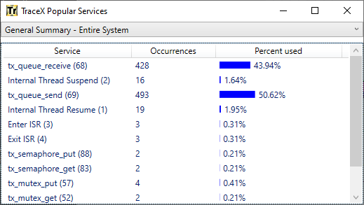
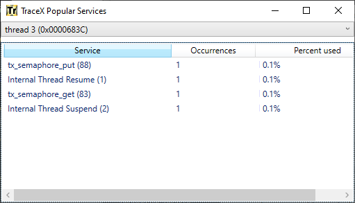
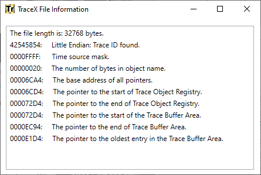

Chapter 4 - TraceX performance analysis
This chapter describes the TraceX performance analysis tool:
Performance Analysis
TraceX provides built-in performance analysis of trace files. Information such as the execution profile, popular services, thread stack usage, and various performance statistics, including FileX and NetX Duo statistics, are readily available. This information is available via the View menu item.
Execution Profile
Selecting the Generate Execution Profile button or View -Execution Profile presents the TraceX execution profile for the currently loaded trace file. The execution profile associated with the sample ThreadX demonstration trace is shown in Figure 19.

FIGURE 19
The example shown in Figure 19 indicates that nearly 45% of the processing time is inside of thread 2 and nearly 51% of the processing time is inside of thread 1 This is logical since the bulk of the trace shows these threads sending and receiving messages. The remaining execution contexts have only a small amount of execution time in this example.
Popular Services
Selecting View ->Popular Services presents the popular services in the currently loaded trace file. By default, this information is displayed for the entire system. However, the popular services for specific threads are also available. The popular services in the sample ThreadX demonstration trace are shown in Figure 20.

FIGURE 20
The example shown in Figure 20 indicates that tx_queue_send and tx_queue_receive are the two most popular services in this trace. This is consistent with the behavior of the standard ThreadX demonstration from which this trace was captured.
Specific threads can be selected for this analysis by using the drop down selection list at the top of this window. Figure 21 shows this analysis for thread 3.

FIGURE 21
Thread Stack Usage 
Selecting the Generate Thread Stack Usage button or View -> Thread Stack Usage presents the stack usage for each thread in the trace file. This is accomplished by ThreadX including the current thread stack pointer in many of the trace entries in the file. A stack usage of 100% indicates the stack has overflowed and must be corrected in the application. If there is no thread execution within this trace file, the stack usage for that thread is shown at 0%. The thread stack usage in the sample ThreadX demonstration trace is shown in Figure 22.

FIGURE 22
The example shown in Figure 22 indicates that most threads in this trace have between 9% and 12% stack usage.
Performance Statistics
Selecting the Generate Performance Statistics button or View -> Performance Statistics presents the performance statistics of the currently loaded trace file. By default, this information is displayed for the entire system. However, the performance statistics are also available for each specific thread.
The performance statistics of the sample ThreadX demonstration trace are shown in Figure 23.

FIGURE 23
The example shown in Figure 23 indicates that there were 18 context switches in this trace file, as well as five thread preemptions, 16 thread suspensions, 19 thread resumptions, and three interrupts. There were no priority inversions found in this trace file. Notice there are two categories of priority inversions, namely, deterministic and nondeterministic. Deterministic priority inversions are priority inversion in which a thread is blocked on a mutex owned by a lower priority thread. An nondeterministic priority inversion is where a different lower priority thread runs during a deterministic priority inversion. The later can cause unforeseen timing behavior in the application and should be studied carefully.
FileX Statistics
Selecting View -> FileX Statistics presents the FileX performance statistics of the currently loaded trace file. This information is displayed for the entire system, on all opened ../media objects. The performance statistics of the sample FileX demonstration trace are shown in Figure 24.

FIGURE 24
The example shown in Figure 27 indicates there were 19 ../media opens, 19 ../media closes, 19 ../media flushes, 18 directory reads, 19 directory writes, and 18 directory cache misses. Additional information can be viewed by scrolling down in the statistics window.
NetX Duo Statistics
Selecting View -NetX Statistics presents the NetX Duo performance statistics of the currently loaded trace file. This information is displayed for the entire system. The performance statistics of the sample NetX Duo demonstration trace are shown in Figure 25.

FIGURE 25
The example shown in Figure 25 indicates there were no ARP, Ping, or UDP events, but there were 30 IP packets sent, 1,368 IP bytes sent, 30 IP packets received, and 1,360 IP bytes received.
Trace File Information
Selecting View -> Trace File Information presents some basic information about the opened trace file. This information includes the byte order of the file, size of the time source, maximum number of bytes for each object name, and the base address of all trace file pointers. Figure 26 shows the trace file information for the standard demo_threadx.trx trace file.

FIGURE 26
Raw Trace Dump
Selecting View -> Raw Trace Dump presents a dialog to name the file containing the raw trace dump. After the file name and path are entered, TraceX builds the raw trace file in text format and launches notepad.exe to display it. Figure 27 shows the raw trace file dump for the standard demo_threadx.trx trace file.

FIGURE 27